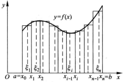

简单来说：求面积

$\int_{a}^{b}{f(x)dx}={\displaystyle\lim_{\lambda\rightarrow{0}}\sum_{i=1}^{n}{f(\xi_{i})\Delta{x_{i}}}}$
$\int_{a}^{b}{[\alpha{f(x)}+\beta{g(x)}]dx}=\alpha{\int_{a}^{b}f(x)dx}+\beta{\int_{a}^{b}g(x)dx}$
$\int_{a}^{b}f(x)dx=\int_{a}^{c}f(x)+\int_{c}^{b}f(x)dx$
$\int_{a}^{b}dx=b-a$
$\int_{a}^{b}f(x)dx \geq 0 \ ,(f(x) \geq 0 在[a,b]上恒成立)$
$\int_{a}^{b}f(x)dx \geq \int_{a}^{b}g(x)dx \ ,(f(x) \geq g(x) 在[a,b]上恒成立)$
$\int_{a}^{b}|f(x)|dx \geq |\int_{a}^{b}f(x)dx|$
$m(b-a) \leq \int_{a}^{b}f(x)dx \leq M(b-a) \ ,(m,M分别为f(x)在[a,b]上的最小最大值。)$
$\int_{a}^{b}f(x)dx=f(\xi)(b-a) ,(a \leq \xi \leq b)$（积分中值定理）
$\frac{d}{dx}\int_{a}^{x}f(t)dt=f(x)$
$\frac{d}{dx}\int_{a}^{g(x)}f(t)dt=f(g(x))$
$\phi{(x)}=\int_{a}^{x}f(t)dt 是 f(x)在 [a,b]上的一个原函数。$
$\int_{a}^{b}f(x)dx=F(b)-F(a)=[F(x)]_{a}^{b}$ （$F(x)$ 是 $f(x)$ 在 $[a,b]$ 上的一个原函数）
同不定积分，但是带上了上下限。
$\int_{a}^{+\infty}f(x)dx={\displaystyle \lim_{ t \rightarrow +\infty}}\int_{a}^{t}f(x)dx$
$\int_{-\infty}^{b}f(x)dx={\displaystyle \lim_{ t \rightarrow -\infty}}\int_{t}^{b}f(x)dx$
若极限存在则反常积分收敛，且极限为反常积分的值。
反之则反常积分发散。
瑕点和瑕积分：若函数 $f(x)$ 在点 $a$ 的任一邻域内都无界，那么点 $a$ 称为函数 $f(x)$ 的瑕点。无界函数的反常积分称为瑕积分。
$f(x)$ 在区间 $(a,b]$ （ $a$ 为瑕点）上的反常积分为
$\int_{a}^{b}f(x)dx={\displaystyle \lim_{ t \rightarrow +a^+}}\int_{t}^{b}f(x)dx$
$f(x)$ 在区间 $[a,b)$ （ $b$ 为瑕点）上的反常积分为
$\int_{a}^{b}f(x)dx={\displaystyle \lim_{ t \rightarrow +b^-}}\int_{a}^{t}f(x)dx$
若极限存在则反常积分收敛，且极限为反常积分的值。
反之则反常积分发散。